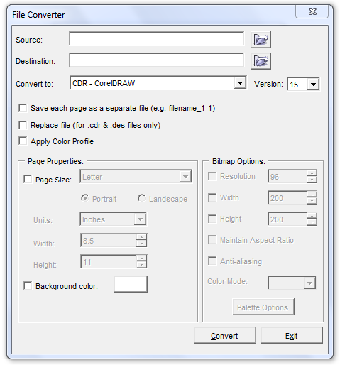

файлы старых версий корела
spich / 09.12.2010, 01:35/00:41
Форум:
Имеется несколько клипартов старых версий корела (приобретали лет 15 назад) :) - примерно 2-я и 3-я... как открыть? или чем сконвертить, чтобы можно было открыть Х5.
Знаю, что открываются 5-м корелом... есть что нибудь еще?
Попробуйте в 5-м кореле экспортировать файл в формат eps, svg либо любой другой векторный, а потом X5-м корелом открыть экспортированный файл.
а если в CMX?
Да в принципе можно и в cdr сохранить. Эти кдр-ки вроде как понимаются новыми корелами. Просто клипарты на пару тысяч картинок и каждый раз для конвертации в читабельный формат устанавливать 5-й корел (или постоянно держать его установленым) - неудобно. А в 5-м нет скрипта конвертации, чтобы все разом перевести... (
Еще как есть. Называется File Converter

Согласен - конвертер хороший... но видимо возникло непонимание абревиатур 5 корел это пятый корел, а никак не Х5 (пятнадцатый). И если Х5 непонимает файлы 5-й версии, то соответственнно и его конвертер не может их конвертнуть...
Какое расширение у файлов то?
cdr
хм ) Не знаю даже есть в 5 версии скриптинг или нет, хотя ставил её и пробовал. Если есть, то написать скрипт при желании не составит труда.
закиньте хоть файлик для экспериментов
Вот из двух клипартов. У второго клипарта расширения CD_
Уже непомню что это означает. Сжатые чтоли...
Добавлено (10.12.2010, 22:10)
---------------------------------------------
вот CD_ если интересно
Добавлено (10.12.2010, 22:13)
---------------------------------------------
Почему то сразу не прикрепился...
Добавлено (10.12.2010, 22:15)
---------------------------------------------
CD_ не цепляется :(
Страницы